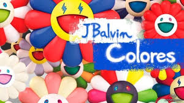
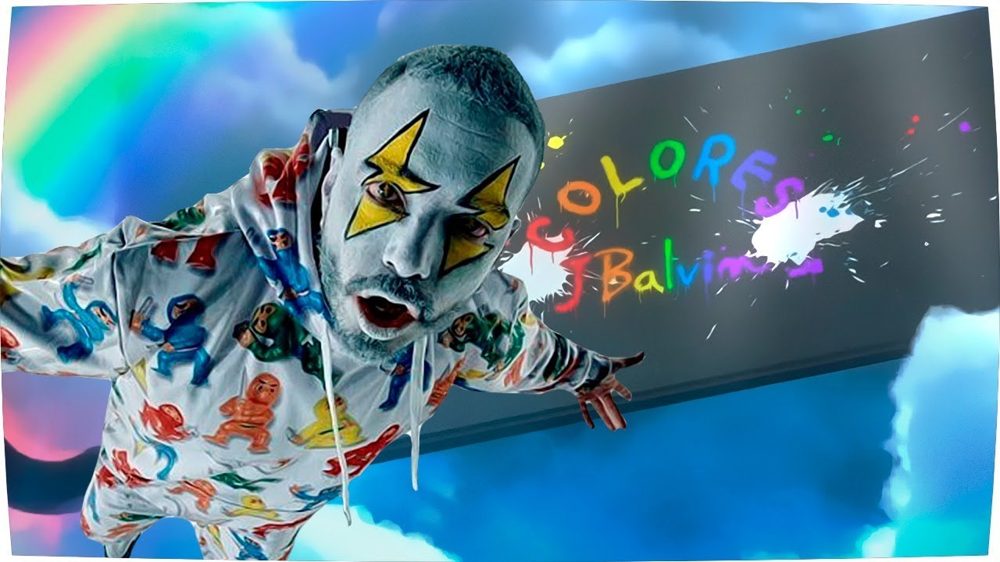
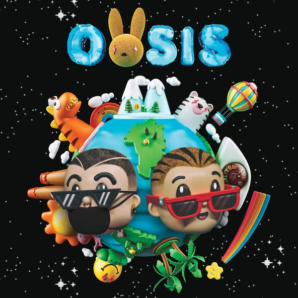

Carrera musical
Novedades
El cantante J Balvin es conocido por alzar su voz frente a los casos de depresión e incluso por cancelar su presentación en Miss USA en 2015, cuando Donald Trump aún era precandidato a la presidencia y se hablaba sobre la necesidad de construir un muro en la frontera de EE. UU. y México
Éxitos
Colores ya está en la calle. El esperadísimo álbum conceptual de J Balvin se estrenó el viernes 20 de marzo y el cariño de su público no se ha hecho esperar. Estuvo a punto de posponer el lanzamiento de este disco debido a la crisis sanitaria actual, pero... qué queréis que os diga, lo mejor que le podía pasar al mundo es que el músico colombiano se atreviera a lanzar su arte, dándonos así un respiro frente a la cuarentena. Primer punto para él
Noticias
Este sábado se conocieron los ganadores de la nueva edición de los Premios Nuestra Tierra 2020 en la que se premiaron a diferentes artistas en 25 categorías, dos de ellas escogidas por el público, y las otras 23 por jurados, críticos de música y los mismos artistas. El gran vencedor de la noche fue el artista paisa J Balvin, quién recibió cinco galardones a mejor artista del año, mejor artista urbano, mejor canción dance electro, mejor gira concierto en vivo y mejor video.
Duetos
“Oasis”, el álbum en conjunto del puertorriqueño Bad Bunny y el colombiano J Balvin, se convirtió en el primer disco latino en la historia que ha logrado posicionar cada una de sus canciones en la lista Global 100 Chart
